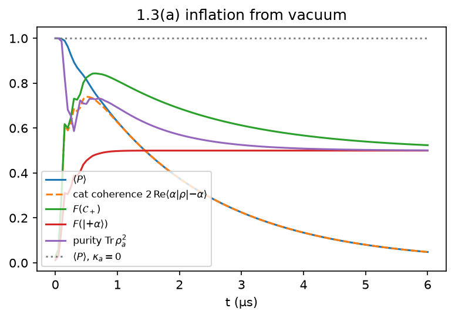
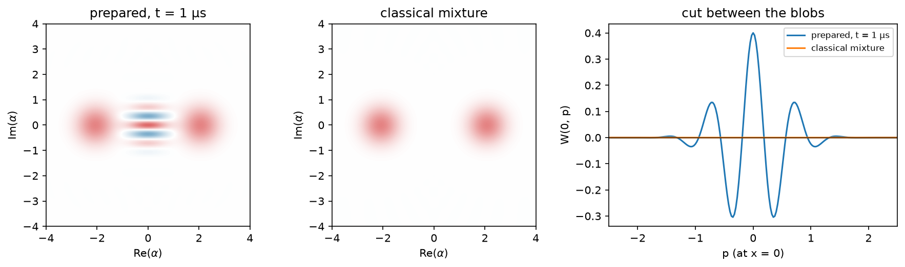
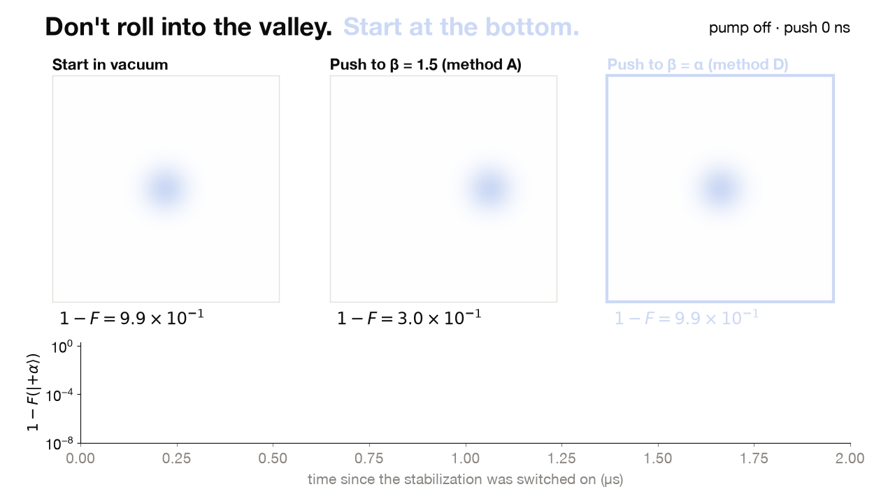
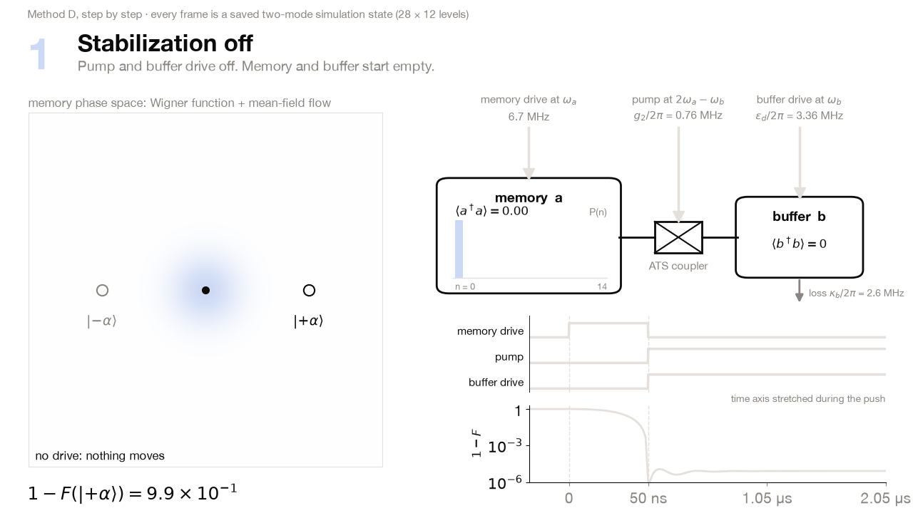
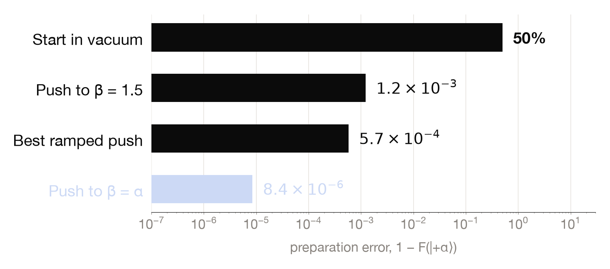
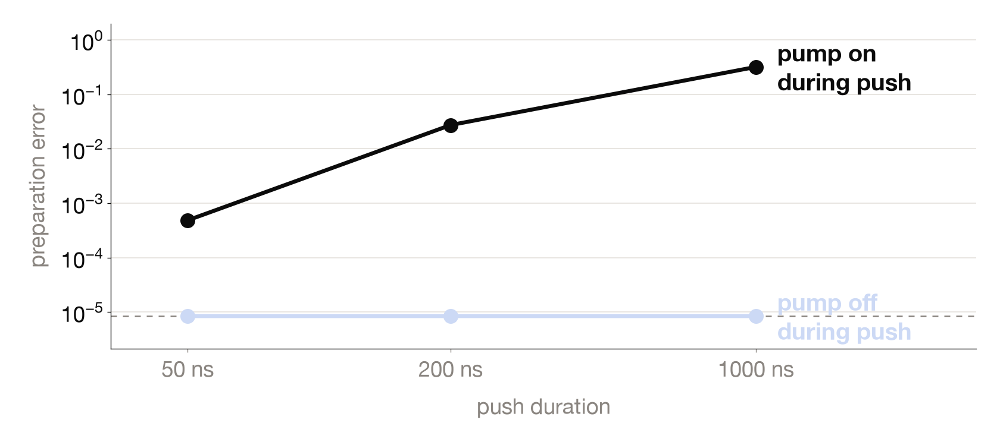

1.3(a)
Vacuum can only become the even cat

Vacuum has ⟨P⟩ = +1. The drive, buffer loss and a²b† change the memory photon number by two (1.0(b)), so parity is conserved and |0⟩ can only grow |C₊⟩ ∝ |+α⟩ + |−α⟩.
2.4 × 10−15
drift of ⟨P⟩ with κa = 0
0.811
F(C₊) at 1 µs: memory loss sets in
0.501
purity at 6 µs: an equal mixture of the two codewords
1.3(a) · not a mixture
A superposition, not a mixture

1.95µs
superposition lifetime, from the fringe decay
0.5126/µs
fringe decay rate, measured
0.5154/µs
predicted 2κaα²
1.9434µs
independent check (Liouvillian gap)
1.3(b) · the idea
Don't roll into the valley. Start at the bottom.

Push the memory to exactly β = α with the pump off. On |α, 0⟩ the pair exchange cancels the buffer drive, so the codeword is a dark state:
g₂α² − εd = 0
8.41 × 10−6
error, two-mode model
9.3 × 10−12
with κa = 0: the error is all memory loss
1.3(b) · the protocol
Push with the pump off, then stabilize

1.3(b) · result
Lowest error of every preparation we tested

68×
lower than the best ramped push
5.37 × 10−5
with real-circuit Kerr terms
14×
lower, with circuit terms
1.3(b) · a real push
Turn the pump off while you push

8.4 × 10−6
pump off, 50 ns push
8.4 × 10−6
pump off, 1 µs push
4.8 × 10−4
pump on, 50 ns push
3.2 × 10−1
pump on, 1 µs push
1.3(c) · real hardware
It survives the effects the ideal model leaves out
Simulated in the same two-mode model: 1 − F(|+α⟩) after 2 µs. Each effect costs one calibration step.
| effect | ignored | handled | fix |
|---|---|---|---|
| Memory frequency shift with the pump off, 200 ns push | 6.8 × 10−3 | 1.0 × 10−5 | calibrate the push frequency |
| Pulse smoothing in the wiring, τ = 10 ns | 1.3 × 10−5 | 8.4 × 10−6 | switch the pump on 5τ later |
| Reflected echo, 10% arriving 20 ns later | 8.5 × 10−6 | 8.4 × 10−6 | the same delayed pump switch |
6.6 × 10−5
method D, all effects at once plus circuit terms (+10% κa, 10⁻³ thermal photons)
1.3 × 10−3
method A under the same conditions
1.3 × 10−4
method D with a very hot drive line (2κa, 10⁻² thermal photons)
1.3(c)
What it costs
One memory drive linethe same line any displacement needs
A fast pump switchpump off during the push
Phase calibration22.5° off → 1.69 × 10−3
Amplitude is forgiving±10% → 5.85 × 10−5, 5.06 × 10−5
Real circuit: the memory Kerr sets the floor at 5.37 × 10−5. Removing it needs a drive we have not shown the device can make, so we report it as an extension, not a result.